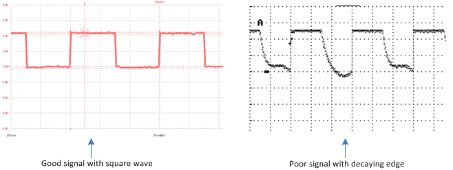

The Pneumatic Pressure Measurement system operates at high pressures. To prevent serious injury and/or irreparable damage to equipment, personnel must be briefed on the system operation. Wear safety glasses when making or breaking quick disconnects or other pressure connections.
To prevent serious injury and/or irreparable damage to equipment, observe all manufacturer's warnings and safety precautions during operation and/or maintenance.
To prevent injury and damage to equipment, do not purge the scanner with installed dust caps or a sealed measurement port. Turn off the purge supply pressure before applying power to the scanner.
| Maintenance Checklist - Pneumatic Pressure Measurement |
|---|
The following table indicates possible causes for pressure measurement failure.
| Item | Troubleshooting | |||
|---|---|---|---|---|
| Mode | Detection Method | Effect on System | Possible Causes | |
| Pressure Scanners | Loss of communication messages | Error messages in the Unified Event Log (UEL) | No communication | • trigger not configured correctly • power supply failure • cable disconnected |
| Pressure Scanners | During start scan process | Loss of communication messages for the scanner | No communication | Trigger problem See: How to Troubleshoot Trigger Problems with Pressure Scanners |
| Pressure Scanners | External trigger does not start the scanner, but the software trigger works | Wave profile of the trigger signal | Scanner goes to idle when trigger not detected | • proDAS trigger frequency does not set the proportional frequency to the DIO. • proDAS DIO frequency set to continue high (DC level) due to configuration conflict. • trigger signal is not uniform as shown in the figure below |
| Using an oscilloscope, ensure that the square wave profile of the trigger signal is uniform and does not roll off.  |
||||
The following equipment may be required during maintenance or troubleshooting:
The following table contains MDS recommended maintenance and scheduling information for the Pneumatic Pressure Measurement System.
| Topic | Maintenance | |
|---|---|---|
| Before Each Engine Test | Annual | |
| Inspect the Pneumatic Pressure Measurement System | ||
| Purge and Zero the Pressure Scanners | ||
| Check the Calibration of the Pressure Scanners | ||
For OEM maintenance information, see the Vendor Documentation.